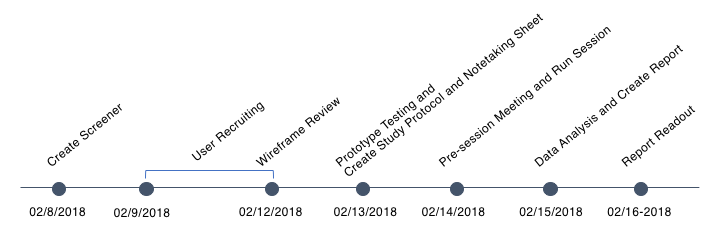
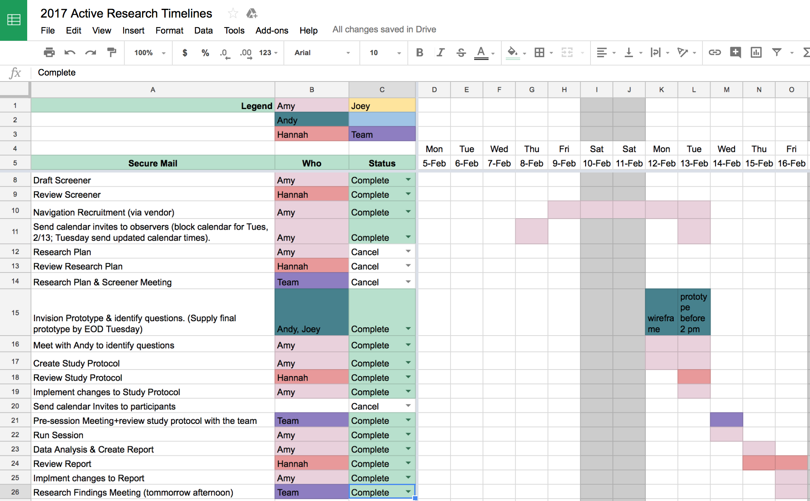
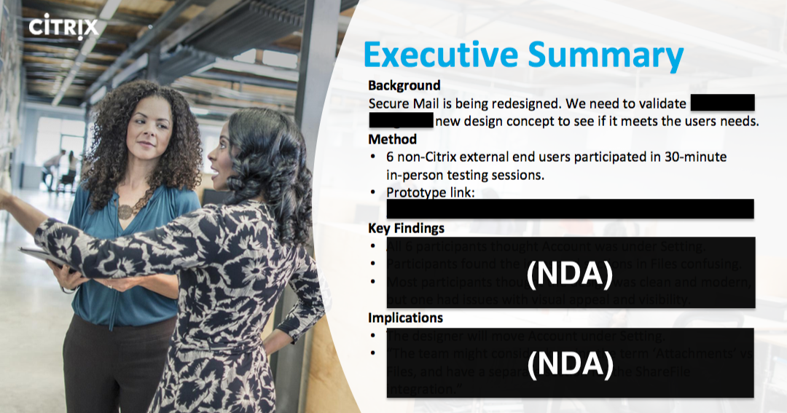
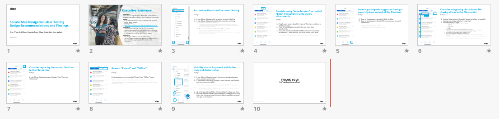

This was a project extended from my internship at Citrix. Based on the identified use cases and the competitive analysis I did last summer, the Product Design team redesigned the Secure Mail app. The new user interface requested a quick validation so the design team could know if it met the user needs. I conducted 6 user testing to validate the new design concepts. The research was done in a week. The final report was shared with the international Citrix Secure Mail team.
My Role
What I used: Interview, task-based usability testing, content coding
I led the study, including working with a vendor for recruitment, designing the study, moderating user testing sessions, analyzing data, writing a report and holding a meeting for findings and recommendations readout.
Goal
The research goal was to validate new navigation design concepts to see if they met the user needs. The team planned to launch the new user interface in Q1, and thus the research schedule became very tight.

Process
I. Challenge: Tight Schedule
The team tried to validate the design before moving forward to the development stage, and the deadline was in a week. The kick-off meeting needed to be held immediately. The research project manager and the core team helped me squeeze it into my research schedule.

II. Concern: Recruitment
The main concern was the user recruitment. Recruiting 6 participants in 5 days including a weekend was very challenging. I, therefore, created a screener and contacted a vendor immediately once we accepted the research request.
The main criteria for the participants for this study were:
Checks work email and work calendar on a mobile email app
Does not work for Citrix or other competitor companies
Be able to participate in a 30-minute in-person session in Santa Clara
III. Communication: Study Guide
I reviewed the wireframes first and worked closely with designers to understand what they wanted to test. Knowing in which part of the design they were lack of confidence and what assumptions they have currently was important for me to create a study guide. By understanding their design thinking and logic, it was easier and faster for me to draft the study protocol.
The main tasks we came up with:
Compose
Calendar
Contact
Account
Attachment
Setting
IV. Execution: 6 Sessions in One Day
I conducted 6 user testing in one day. The time for preparation or debriefing between sessions was very short. Fast and short discussion for protocol modification became primary for utilizing the time. Designers, as my observers and note takers, would give me feedback and I would decide to add or cut several questions based on what they and myself had learned.
In this agile process, most note takers did not have enough time to clean their notes before submitting. A well-designed note-taking form assisted my session observers to take informative notes.
V. Data Analysis and Report Creating
With Google sheet exported from the note taking form, I could easily track how many participants achieved success at a task at their first attempt, how many of them struggled, and how many participants failed the tasks in the end. I had numbers to back up my findings by using content coding. And with content analysis, I found users from diverse background gave similar feedback regarding some tasks. Design recommendations were given based on findings in each slide of the report in PowerPoint so the designers could quickly understand why suggestions were made. The insights I uncovered were shared to adjust current new design before moving on to the development stage.
Impact
The team decided not to implement some new experimental design concepts according to the user feedback since they created too much confusion.
Before a new feature could be implemented, the team would stay with some parts of the old design for the current features provided in order to avoid misunderstandings.
A further study regarding a specific tab in the app would be a part of the next step. From there, a new feature would be officially brought into the future discussion.
Reflection
With my internship experience, I was familiar with the team and the product. It helped me start quickly and move fast throughout the process. Everything went smoothly and excepted the recruitment, the study was conducted and finished in three days.
I noticed that the recruitment was a significant factor whether a study could be smooth or not in a research process. I encountered great difficulties in my internship. One of the causes was the unsmooth communication with the vendor for the recruitment. This time, I worked closely with the vendor. The participants were all eligible and punctuate.
I also learned from the last experience that the time estimation needed to include enough buffer, so we would be able to deal with any accidents. I found that was also a reason why I could conduct back-to-back sessions without issues this time.
My Works
Secure Mail: Agile User Testing (NDA)
February, 2018
Secure Mail was being redesigned and would launch the new user interface based on the findings and recommendations from the Competitive Analysis that I did during my summer internship. I conducted 6 user testing to help validate the new design concepts. Read More>>
Secure Mail: Benchmarking Research (NDA)
May - August, 2017
I worked as a Product Design Research Intern at Citrix Product Design team. I led the UX research study on Secure Mail app to guide the redesign efforts with design recommendations. I did a competitive analysis with gap analysis and 20 user experience testing to identify the use cases and understand the product positioning in the market. Read More>>
To comply with my Non-Disclosure Agreement (NDA), I have omitted or reinterpreted the confidential information, but it wouldn't affect me to share my thoughts, personal experience, and what I had learned with you.
Expedia Mobile App: Discovering Millennials Trip Planning Behavior
January - April, 2017
My teammates and I conducted interviews, comparative analysis, surveys, heuristic evaluation, online surveys, and usability testing to investigate how millennial travelers planned their trips with online tools. Based on our findings, Expedia would expand their service and create a new feature that would assist people to explore new destinations for travel. Read More>>
2nd Brain: Needs Finding and Validation
January - April, 2017
My team members and I conducted surveys, focus groups, and in-depth interviews to study what problems teenagers with chronic illnesses were facing and what they needed to improve their medication adherence. The project was particularly interesting due to the traits of our audiences and the dynamic relationship between stakeholders and audiences. Therefore, the process of needs validation was unique and challenging. Read More>>
Michigan Legal Help: Identified Workflow Issues
September - December, 2016
Using contextual inquiries, my teammates and I investigated how people work at Michigan Legal Help, a non-profit organization, in order to help them upgrade their workflow. Read More>>
 AMY CHEN
AMY CHEN